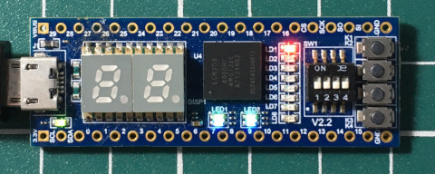
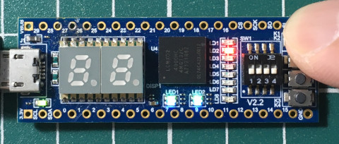

參考資訊：
https://www.stepfpga.com/doc/step-mxo2%E5%85%A5%E9%97%A8%E6%95%99%E7%A8%8B
main.vhd
library ieee;
use ieee.std_logic_1164.all;
use ieee.numeric_std.all;
entity main is
port(
btn : in bit;
led : out unsigned(7 downto 0)
);
end main;
architecture logic of main is
signal cnt : unsigned(7 downto 0) := "11111110";
begin
process(btn) is
begin
if (btn'event and btn = '0') then
cnt <= cnt rol 1;
end if;
end process;
led <= cnt;
end logic;
main.lpf
LOCATE COMP "led[0]" SITE "N13"; LOCATE COMP "led[1]" SITE "M12"; LOCATE COMP "led[2]" SITE "P12"; LOCATE COMP "led[3]" SITE "M11"; LOCATE COMP "led[4]" SITE "P11"; LOCATE COMP "led[5]" SITE "N10"; LOCATE COMP "led[6]" SITE "N9"; LOCATE COMP "led[7]" SITE "P9"; LOCATE COMP "btn" SITE "L14";
完成

